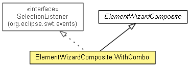

org.eclipse.net4j.util.ui.container
Class ElementWizardComposite.WithCombo
java.lang.Object
 org.eclipse.swt.widgets.Widget
org.eclipse.swt.widgets.Control
org.eclipse.swt.widgets.Scrollable
org.eclipse.swt.widgets.Composite
org.eclipse.net4j.util.ui.container.ElementWizardComposite
org.eclipse.net4j.util.ui.container.ElementWizardComposite.WithCombo
org.eclipse.swt.widgets.Widget
org.eclipse.swt.widgets.Control
org.eclipse.swt.widgets.Scrollable
org.eclipse.swt.widgets.Composite
org.eclipse.net4j.util.ui.container.ElementWizardComposite
org.eclipse.net4j.util.ui.container.ElementWizardComposite.WithCombo
- All Implemented Interfaces:
- EventListener, IListener, SelectionListener, Drawable, org.eclipse.swt.internal.SWTEventListener
- Enclosing class:
- ElementWizardComposite
- public static class ElementWizardComposite.WithCombo
- extends ElementWizardComposite
- implements SelectionListener

| Fields inherited from class org.eclipse.swt.widgets.Control |
view |
|
Constructor Summary |
ElementWizardComposite.WithCombo(Composite parent,
int style,
String productGroup,
String label)
|
ElementWizardComposite.WithCombo(Composite parent,
int style,
String productGroup,
String label,
ValidationContext validationContext)
|
ElementWizardComposite.WithCombo(Composite parent,
int style,
String productGroup,
String label,
ValidationContext validationContext,
String defaultFactoryType)
|
| Methods inherited from class org.eclipse.net4j.util.ui.container.ElementWizardComposite |
create, factoryTypeChanged, getContainer, getDefaultDescription, getDefaultFactoryType, getDescription, getFactoryTypes, getLabel, getNotifier, getProductGroup, harvestControls, init, layout, notifyEvent, setDefaultDescription, setValidationContext |
| Methods inherited from class org.eclipse.swt.widgets.Composite |
changed, checkSubclass, computeSize, drawBackground, getBackgroundMode, getChildren, getLayout, getLayoutDeferred, getTabList, isLayoutDeferred, layout, layout, layout, layout, setBackgroundMode, setFocus, setLayout, setLayoutDeferred, setTabList |
| Methods inherited from class org.eclipse.swt.widgets.Control |
addControlListener, addDragDetectListener, addFocusListener, addGestureListener, addHelpListener, addKeyListener, addMenuDetectListener, addMouseListener, addMouseMoveListener, addMouseTrackListener, addMouseWheelListener, addPaintListener, addTouchListener, addTraverseListener, computeSize, dragDetect, dragDetect, forceFocus, getAccessible, getBackground, getBackgroundImage, getBorderWidth, getBounds, getCursor, getDragDetect, getEnabled, getFont, getForeground, getLayoutData, getLocation, getMenu, getMonitor, getOrientation, getParent, getRegion, getShell, getSize, getToolTipText, getTouchEnabled, getVisible, internal_dispose_GC, internal_new_GC, isEnabled, isFocusControl, isReparentable, isVisible, moveAbove, moveBelow, pack, pack, print, redraw, redraw, removeControlListener, removeDragDetectListener, removeFocusListener, removeGestureListener, removeHelpListener, removeKeyListener, removeMenuDetectListener, removeMouseListener, removeMouseMoveListener, removeMouseTrackListener, removeMouseWheelListener, removePaintListener, removeTouchListener, removeTraverseListener, setBackground, setBackgroundImage, setBounds, setBounds, setCapture, setCursor, setDragDetect, setEnabled, setFont, setForeground, setLayoutData, setLocation, setLocation, setMenu, setOrientation, setParent, setRedraw, setRegion, setSize, setSize, setToolTipText, setTouchEnabled, setVisible, toControl, toControl, toDisplay, toDisplay, traverse, traverse, traverse, update |
| Methods inherited from class org.eclipse.swt.widgets.Widget |
addDisposeListener, addListener, checkWidget, dispose, getData, getData, getDisplay, getListeners, getStyle, isDisposed, isListening, notifyListeners, removeDisposeListener, removeListener, removeListener, reskin, setData, setData, toString |
ElementWizardComposite.WithCombo
public ElementWizardComposite.WithCombo(Composite parent,
int style,
String productGroup,
String label)
ElementWizardComposite.WithCombo
public ElementWizardComposite.WithCombo(Composite parent,
int style,
String productGroup,
String label,
ValidationContext validationContext)
- Since:
- 3.2
ElementWizardComposite.WithCombo
public ElementWizardComposite.WithCombo(Composite parent,
int style,
String productGroup,
String label,
ValidationContext validationContext,
String defaultFactoryType)
- Since:
- 3.2
widgetSelected
public void widgetSelected(SelectionEvent e)
- Specified by:
widgetSelected in interface SelectionListener
widgetDefaultSelected
public void widgetDefaultSelected(SelectionEvent e)
- Specified by:
widgetDefaultSelected in interface SelectionListener
getFactoryType
public String getFactoryType()
- Specified by:
getFactoryType in class ElementWizardComposite
setFactoryType
protected void setFactoryType(String factoryType)
- Specified by:
setFactoryType in class ElementWizardComposite
createFactoryTypeControl
protected void createFactoryTypeControl()
- Specified by:
createFactoryTypeControl in class ElementWizardComposite
Copyright (c) 2004 - 2012 Eike Stepper (Berlin, Germany) and others.